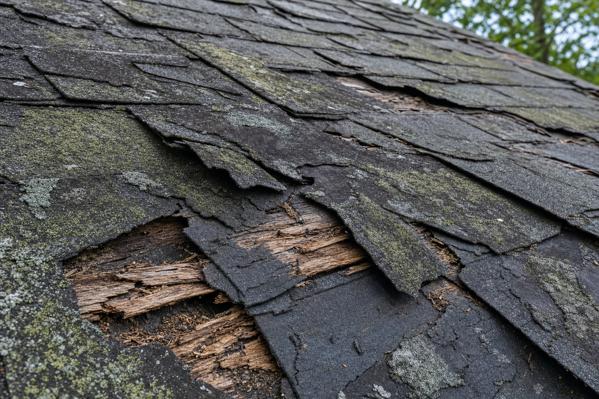

Your roof is doing its job invisibly every day — until it isn't. Most homeowners don't think about their roof until water appears on the ceiling, by which point structural damage has often already occurred. In Hilo's wet climate, identifying roof problems early can save thousands of dollars in water damage remediation. Here are the seven signs we most commonly see that indicate a roof needs replacement rather than repair.
1. Age: Over 20 Years Old
If your asphalt shingle roof is approaching or past 20 years in Hilo's climate, it's living on borrowed time. Even if it looks acceptable from the ground, the material integrity is likely compromised. Schedule an inspection — we may find issues that aren't visible to the untrained eye.
2. Widespread Granule Loss
Check your gutters and downspout drainage areas after rain. If you're finding significant amounts of gray-black granules, your shingles are shedding their protective layer. This accelerates in warm climates and is a strong indicator that replacement is coming.
3. Curling or Buckling Shingles
Shingles that are curling at the edges (cupping) or forming rippled waves (clawing) have reached the end of their useful life. These shapes indicate the shingle's layers are pulling apart due to moisture cycling, and they will fail completely in the next storm.
4. Visible Daylight in the Attic
Go into your attic on a bright day and look up. If you can see pinpoints of light coming through the roof decking, water can get in too. Also look for water stains, dark streaks, or soft spots on the decking — all signs of existing moisture infiltration.
5. Moss, Algae, or Lichen Coverage
Light algae streaking can sometimes be treated with cleaning and zinc strips. But extensive moss or lichen coverage — especially when it's been growing for multiple years — indicates that moisture is consistently trapped in and under the shingles. At this stage, cleaning often reveals damaged shingles beneath, and replacement becomes more cost-effective.
6. Sagging Roof Sections
Any visible sagging or dipping in the roof deck is a serious structural concern. This typically indicates long-term moisture damage to the decking and potentially the rafters or trusses. This is an urgent situation — call us immediately.
7. Repeated Repairs Not Holding
If you've had the same area repaired multiple times and the leak returns, the underlying problem is systemic rather than isolated. At some point, continued repairs become more expensive than a focused replacement. We'll tell you honestly which situation you're in.
Summit Roofing Hawaii serves all of the Big Island. Free estimates, 10-year warranty, and 24/7 emergency response.
Schedule Free Estimate →